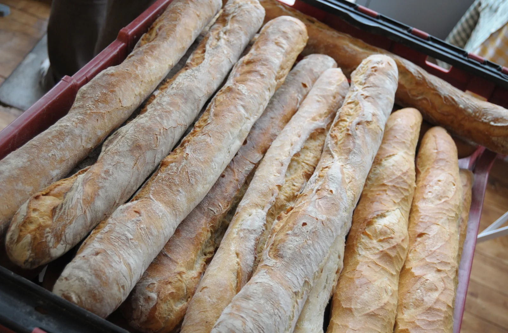

Vier Grundzutaten
Ein klassisches Baguette kommt mit Mehl, Wasser, Salz und einem Triebmittel aus. Zeit bestimmt das Aroma wesentlich mit.

Herkunft & Geschichte
Das Baguette ist eng mit der französischen Alltagskultur verbunden. Seine heute vertraute, lange Form setzte sich vor allem im 20. Jahrhundert durch. Über den genauen Ursprung kursieren verschiedene Geschichten; eine einzelne beliebte Legende erklärt seine Entstehung nicht zuverlässig.
In Frankreich werden Baguettes über den Tag verteilt in kleinen Chargen gebacken. Das handwerkliche Wissen reicht vom Mischen und Fermentieren bis zum Formen, Einschneiden und Backen. Seit 2022 stehen dieses Können und die Kultur rund um das Baguette auf der UNESCO-Liste des immateriellen Kulturerbes.
Zum Weiterlesen: UNESCO: Baguette-Handwerk und -Kultur ↗Zuletzt aufgerufen am
Von außen nach innen
Ein Stück Käse, etwas Butter oder Olivenöl genügen. Als Beilage nimmt die offene Krume Saucen gut auf.
Eine Scheibe Wissen
Ein klassisches Baguette kommt mit Mehl, Wasser, Salz und einem Triebmittel aus. Zeit bestimmt das Aroma wesentlich mit.
Die UNESCO würdigte 2022 die handwerklichen Kenntnisse und die gesellschaftliche Kultur des Baguettes.
Durch seine schlanke Form hat das Baguette im Verhältnis zum Inneren viel Kruste – ideal für alle, die es knusprig mögen.
Vom Lesen zum Backen
Ein einfaches Baguette-Rezept für zu Hause, ohne aufwendiges Kneten. Das passende Rezept „Baguette magique“ findest du auf Chefkoch.
Rezept auf Chefkoch ansehen ↗Externe Rezeptseite · öffnet in einem neuen TabZuletzt aufgerufen am